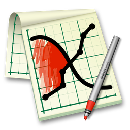

GraphSketcher Help
www.GraphSketcher.com
What GraphSketcher Is
Introduction to the Canvas
Drawing Lines and Points with the
Draw Tool
Drawing Fills with the
Fill Tool
Adding Labels with the
Text Tool
Selecting, Editing, and Moving Objects with the
Modify Tool
Attaching and Detaching Objects
Locking and Unlocking Objects
Grouping and Ungrouping Objects
Adjusting the Axes
Importing Data
Exporting Data
The Style Inspector
The Axes Inspector
The Canvas Inspector
The Data Points Inspector
Tips for
Working with Data Sets
Logarithmic Scales
Best-fit lines
Error Bars
Menu commands